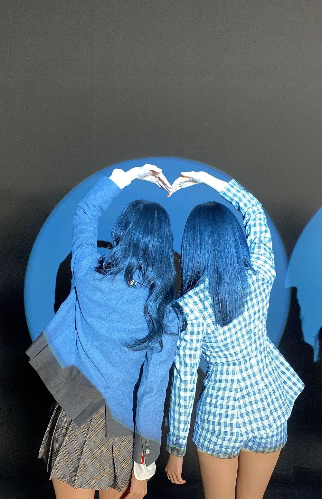
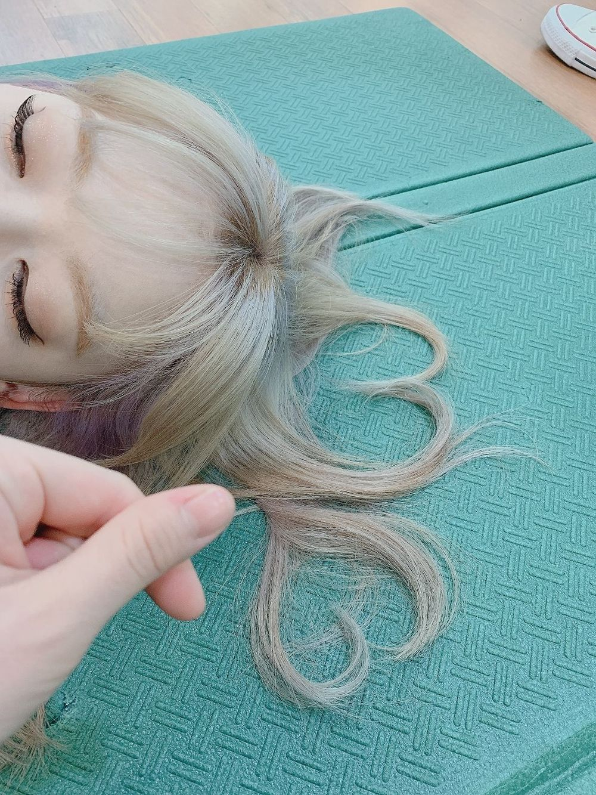

내가 찍은 뒷모습에 주인공을은?
채원 민주 ㅎㅎ 의상땜에 퀴즈라 할 것없이 위즈원한테는
식은 죽 같은 문제였으
스포트라이트라고 해야하나 (핀조명) 그게 멋있어서
뒷모습 찍어주려고 했는데 하트까지!!
보기가 좋다..

요건 플레이컬러 (지니) 안무영상 찍을 때 같다 ㅎㅎ
염색한 지 얼마 안되서 흑발이 잘 유지가 된 날인데
점점 다시 갈색으로 빠졌어.. 왜냐하면 내 원래 머리색이
갈색이거든 ㅠㅠ 눈동자도 자세히 보면 고동색? 갈색이아 :)
내 눈동자 보러 나 보러와...
일본 포토북 촬영하면서 긴 대기시간에 잠든 사쿠쨩
머리카락으로 장난을 좀 쳐봤어
바로 하트 만들기♡
유치뽕짝이지만
그 땐 나름 스릴 넘쳤다
